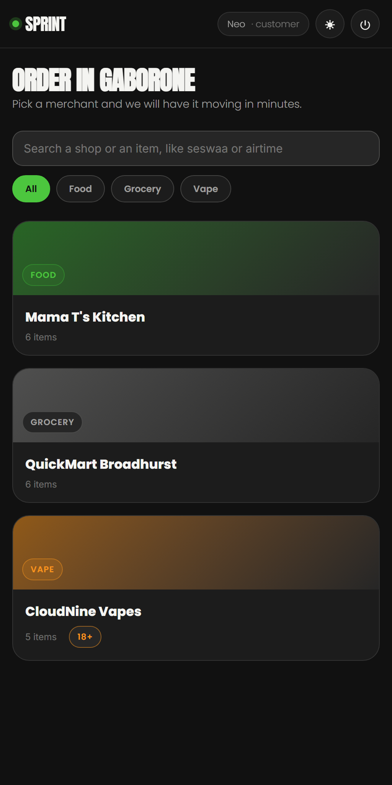
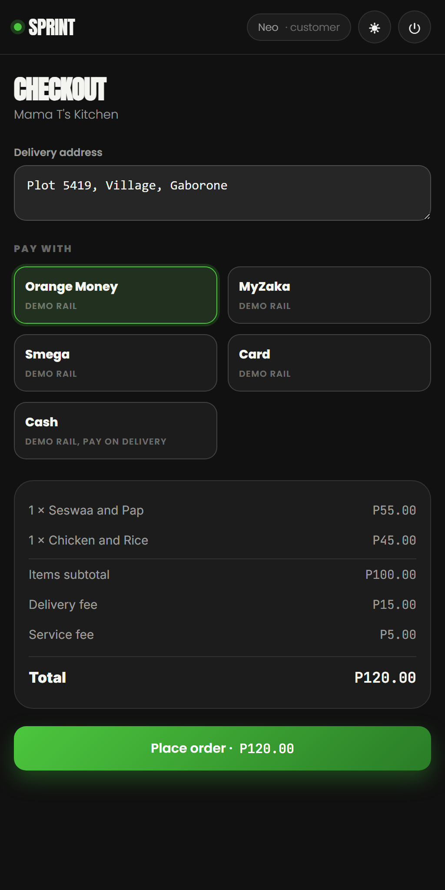
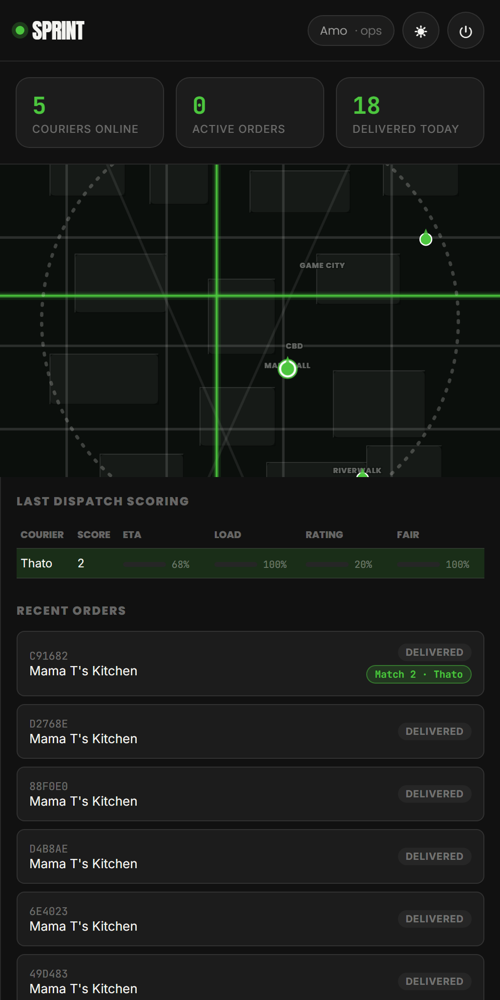
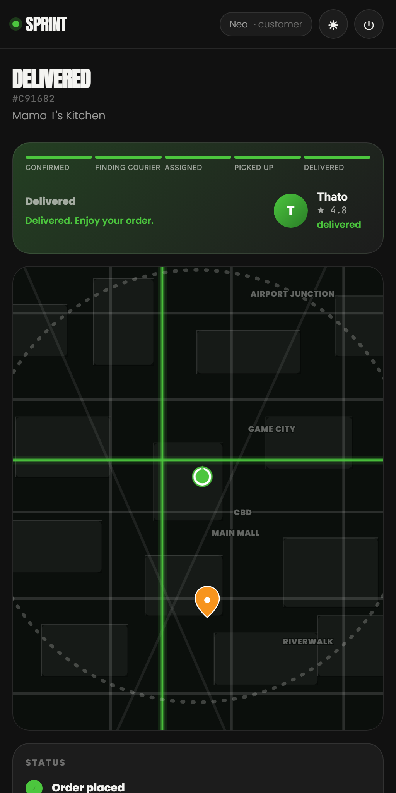

A customer orders from any shop in the city. Sprint picks the right rider in seconds, the customer watches the trip on a live map, and when it lands the money splits itself between the shop, the rider and Sprint. No phone calls, no haggling, no wondering where it is.
Every shop in one place, searchable, with real prices.

Orange Money, MyZaka, Smega, card or cash. Fees shown first.

The system scores every nearby rider and picks the best one.

Live map, arrival time, and a call if it slips.

These are real screens from the working app, captured on a live order, not drawings.
Every thebe accounted for, on every single order, with no one chasing anyone for payment.
The other apps give a customer one way to order, inside their app. Sprint takes the order wherever the customer already is, and runs all of them on the same engine and the same riders.
Our own marketplace. Every shop in Gaborone, one basket, one delivery.
The same thing in any browser, no download needed, works on any phone.
The shop keeps its own customer and its own brand. Sprint just does the delivery.
The customer texts what they want. They get an order card, pay, and get a tracking link.
Banks, pharmacies and offices book runs on account, with proof of delivery for every item.
Same riders, same tracking, same money rules, whichever door the order comes through.
| What matters | The other apps | Sprint |
|---|---|---|
| Where you can order | Inside their app only | App, web, the shop's own site, WhatsApp, corporate |
| The shop's customer | Becomes the app's customer | Stays the shop's customer |
| Getting paid | Payouts on their schedule | Splits automatically on every order |
| The fleet | Riders signed up recently | A licensed courier already moving parcels daily |
| Business delivery | Food and groceries | Food, groceries, pharmacy, parcels and corporate runs |
Not another food app. A delivery machine the whole city can plug into, built and run by the courier that already moves Botswana.
Built for Gaborone. Moving with you.